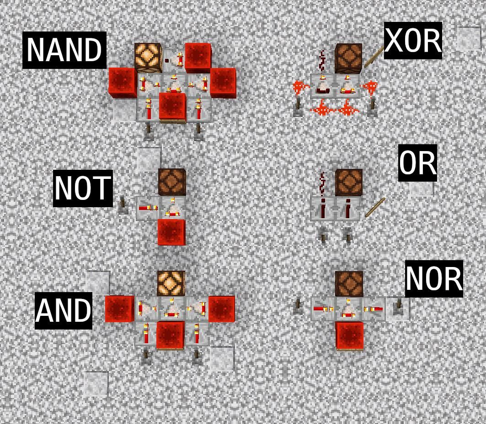
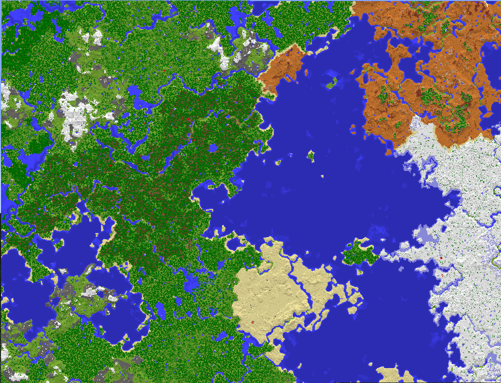

Projects

Redstone Simulator
A simulator to test and build complex Redstone circuits in a controlled environment. Perfect for experimenting with automation ideas and logic gates without the risk of creepers!
Technologies Used: JavaScript, Canvas API
GitHub | Live Demo

Biomes Explorer
An interactive map of all Minecraft biomes, highlighting their unique resources, mobs, and environments. This tool is essential for exploring and planning expeditions into uncharted lands.
Technologies Used: React, Mapbox API
GitHub | Live Demo